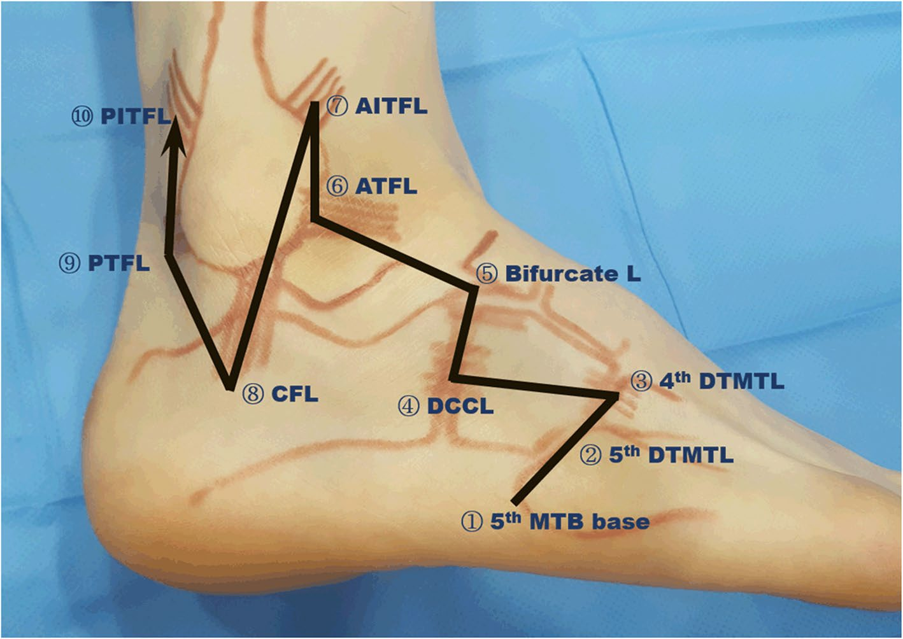

Respuesta clínica corta
¿Qué puede quedar fuera si solo exploras el ligamento talofibular anterior?
Lesiones calcaneofibulares, sindesmóticas y mediotarsianas; el artículo propone un recorrido ordenado desde el quinto metatarsiano.
Dato clave123 pacientes · 165 hallazgos · 31,7% con dos o tres lesiones
El barrido amplió la exploración más allá de los ligamentos talofibular anterior y calcaneofibular y encontró lesiones mediotarsianas o sindesmóticas asociadas; como no hubo patrón de referencia independiente, las frecuencias describen lo observado por los ecografistas y no la exactitud del protocolo.
Observado
Qué encontró y cómo interpretarlo
Se registraron 165 lesiones en 123 pacientes. El ligamento talofibular anterior fue el hallazgo más frecuente: 102 casos; 60 aparecieron aislados, 28 junto al calcaneofibular y 14 con lesión mediotarsiana o sindesmótica.
El 31,7% de los pacientes tuvo dos o tres hallazgos ligamentosos. Entre todas las lesiones, los ligamentos tarsometatarsianos dorsales cuarto y quinto representaron el 7,3%, el bifurcado el 6,7% y el tibiofibular anteroinferior el 6,7%.
El estudio informa dos fracturas vistas por ecografía y no por radiografía, pero carece de patrón de referencia sistemático. No permite calcular sensibilidad, especificidad ni el número real de lesiones omitidas por cada prueba.
Los operadores tenían más de diez años de experiencia y no se informa fiabilidad entre ellos. La aplicabilidad para profesionales en aprendizaje es incierta.
Atlas del artículo
Imágenes para entender el procedimiento
Estas figuras proceden del artículo original y se reproducen con licencia abierta verificada. Se muestran por su utilidad anatómica o técnica, no como prueba aislada de diagnóstico o eficacia.

La figura ordena el recorrido desde el quinto metatarsiano y el mediopié lateral hasta los complejos talofibular, calcaneofibular y tibiofibular.
Cómo leerlaEl mapa mejora la cobertura anatómica, pero no acredita por sí solo fiabilidad, precisión diagnóstica ni que todas las lesiones señaladas sean clínicamente relevantes.
Song JH et al., figura 1 del artículo original · Fuente · Licencia CC BY.
Procedimiento del artículo
Recorrido lateral desde el quinto metatarsiano hasta la sindesmosis
Los autores utilizaron un transductor lineal para recorrer de forma secuencial ligamentos laterales, mediotarsianos y sindesmóticos. La posición del tobillo y las maniobras de estrés cambiaban según la estructura para tensarla y facilitar su identificación.
- Momento
- Ecografía realizada durante la primera semana tras la lesión
- Transductor
- Lineal de 8–17 MHz
- Operadores
- Dos traumatólogos con más de diez años de experiencia ecográfica
- Punto de inicio
- Base del quinto metatarsiano y tendón del peroneo corto
- 01
Mediopié lateral
Se comienza en la base del quinto metatarsiano y se recorren los ligamentos tarsometatarsianos dorsales cuarto y quinto, calcaneocuboideo dorsal y bifurcado.
- Referencias
- Quinto metatarsiano, cuboides, proceso anterior del calcáneo y navicular.
- Lectura
- Desplazar el extremo distal del transductor hacia el navicular ayuda a separar las bandas calcaneocuboidea y calcaneonavicular.
- 02
Ligamento talofibular anterior
Se alinea el transductor entre la fíbula distal y el cuello del talo, paralelo a la planta, y se compara reposo con estrés manual en flexión plantar e inversión.
- Referencias
- Tubérculo fibular anterior, inserción talar y tres zonas: origen, sustancia media e inserción.
- Lectura
- La discontinuidad y los extremos ondulados apoyan rotura completa; el estudio añadió una separación dinámica mayor de 2 mm respecto al lado sano.
- 03
Ligamento calcaneofibular
Se examina desde la fíbula hacia el calcáneo con dorsiflexión e inversión para tensar el ligamento y observar el desplazamiento de los tendones peroneos.
- Referencias
- Tubérculo fibular posteroinferior, tubérculo peroneal, tendones peroneos y calcáneo.
- Lectura
- La maniobra busca hacer visible un ligamento que discurre profundo a los tendones peroneos.
- 04
Sindesmosis y región posterior
Con dorsiflexión y rotación externa se explora el ligamento tibiofibular anteroinferior; después se revisan talofibular posterior y tibiofibular posteroinferior.
- Referencias
- Tubérculos tibial y fibular anteriores y posteriores, proceso posterior del talo.
- Lectura
- El objetivo es no cerrar la exploración tras encontrar una lesión del complejo lateral anterior.
Secuencia reconstruida a partir del apartado de exploración ecográfica del texto completo. Describe el recorrido utilizado en esta cohorte retrospectiva y no constituye un estándar diagnóstico validado.
Aplicabilidad
Qué significa clínicamente
Encontrar una lesión del ligamento talofibular anterior no debería detener automáticamente el recorrido si la clínica sugiere afectación asociada.
Un mapa secuencial puede funcionar como lista de comprobación para documentar estructuras exploradas y maniobras utilizadas.
La inserción fibular, la sustancia media y la inserción talar del ligamento talofibular anterior merecen revisión separada.
Los hallazgos deben integrarse con mecanismo lesional, palpación, capacidad de carga, reglas de decisión y otras pruebas de imagen cuando estén indicadas.
Límite
Qué no permite afirmar
Diseño retrospectivo, muestra de un único entorno y ausencia de estimaciones de precisión diagnóstica.
No hubo confirmación independiente uniforme mediante resonancia, cirugía o seguimiento.
No se estudiaron resultados terapéuticos, pronóstico ni progresión a inestabilidad crónica.
La experiencia de los operadores limita la transferencia directa a ecografistas menos entrenados.
Contexto
¿Se parece a tu paciente?
- Población estudiada
- 123 pacientes con lesión lateral aguda de tobillo examinados mediante ecografía durante la primera semana; edad media de 32,8 años, con 50 hombres y 73 mujeres.
- Diseño
- Cohorte transversal retrospectiva sin patrón diagnóstico independiente
- Resultado evaluado
- Distribución de lesiones ecográficas en pacientes con traumatismo lateral agudo de tobillo
Fuente primaria
Lee el estudio, no solo nuestro análisis
Song JH, Moon JJ, Shin WJ, Ko KP. Use of a comprehensive systemic ultrasound evaluation in the diagnosis and analysis of acute lateral region ankle sprain. BMC Musculoskelet Disord. 2023;24(1):517. doi: 10.1186/s12891-023-06642-0
Responsabilidad editorial
Francisco José Extremera García
Fisioterapeuta colegiado ICPFA 4288 · Osteópata D.O.
Creador y responsable editorial de FisioLógico
- Última revisión
- Conflictos de interés
- Ninguno declarado.